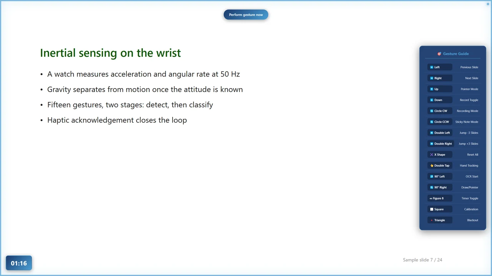
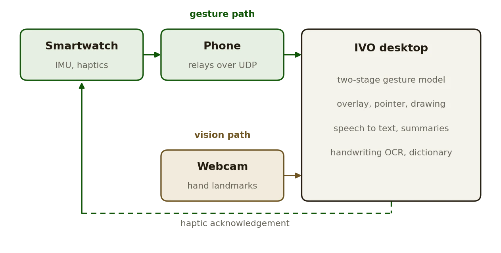

Development · 2025
IVO
IMU-Vision Overlay
A presentation without a clicker: wrist gestures, a webcam, and a watch that buzzes back.
AIAppIMUVisionPython · JS

What it does
- Fifteen wrist gestures change and jump slides, black out the screen and switch every other mode on and off. The watch vibrates when a gesture is read.
- Webcam hand tracking with MediaPipe: the index finger is a pointer, a pinch draws, six colors and four line widths are picked by hovering, and a four-corner calibration maps the camera to the screen.
- Strokes drawn on the overlay become text, an evaluated arithmetic expression or a plotted graph, through Google Vision and SimpleTex, SymPy and Matplotlib.
- Speech becomes a transcript and a summary of the question-and-answer segments, locally, with faster-whisper and an Ollama model.
- Sticky notes with voice input and dictionary lookups in Korean and English, an on-screen timer, and camera and microphone chosen by name so a setup survives a reboot.
- Every feature is also reachable from the keyboard, so the app runs without any of the hardware.
How it is built
- An Electron main process manages the Python subprocesses: gesture controller, hand tracker, speech-to-text, summarizer and dictionary. Gesture data arrives over a WebSocket.
- The two-stage gesture model is trained with IMU Gesture Classifier; the watch and phone apps are IMU Streamer. IVO remaps the six channels between the two packet layouts.
- The models are trained on one wearer and the detector thresholds were tuned by hand; UDP carries no acknowledgement; handwriting OCR calls two cloud APIs. The README says all of this under Limitations.
Facts
- Year
- 2025
- Status
- Public, release v3.2.0
- Stack
- Electron and Node.js; Python with PyTorch, MediaPipe, OpenCV, faster-whisper
- Hardware
- WearOS watch, Android phone, any webcam
- Context
- Undergraduate capstone project, Myongji University
Figures
